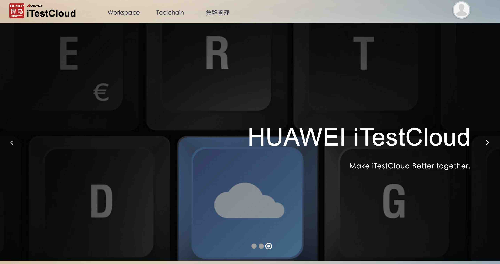
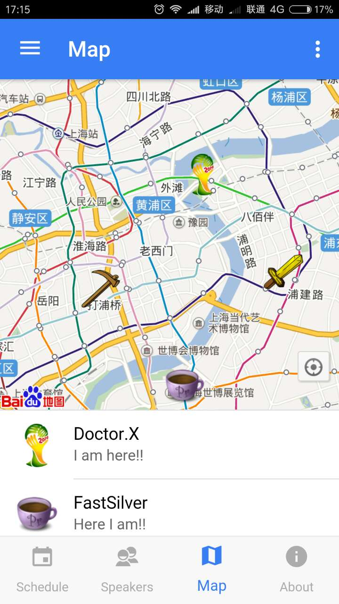
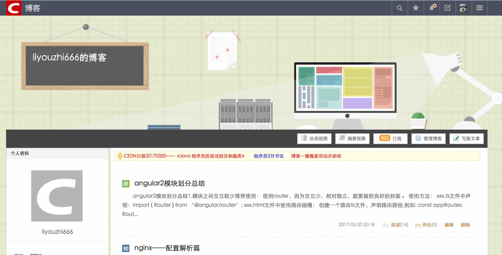
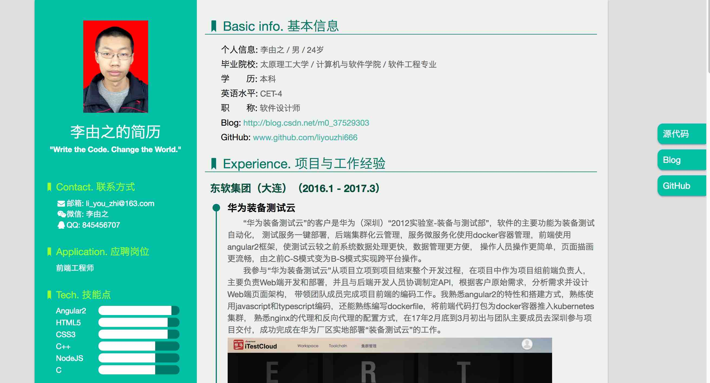
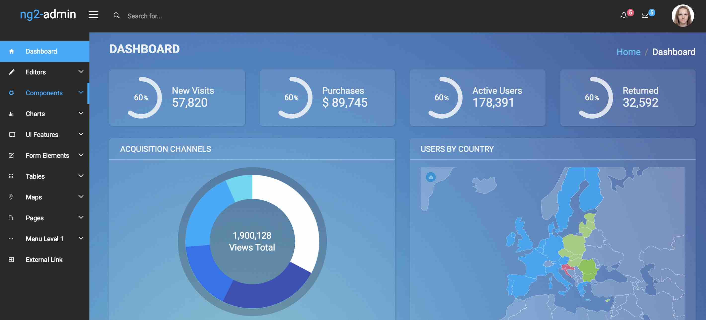
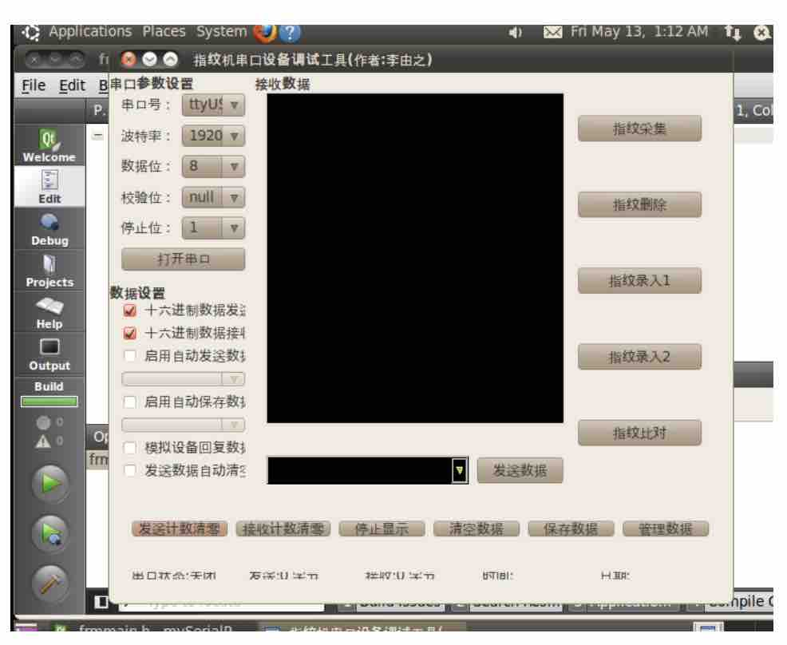
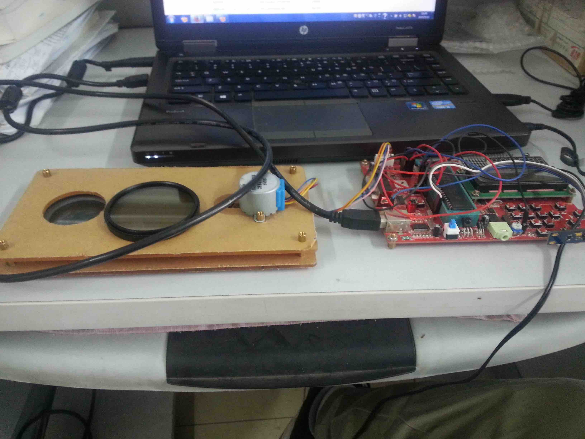
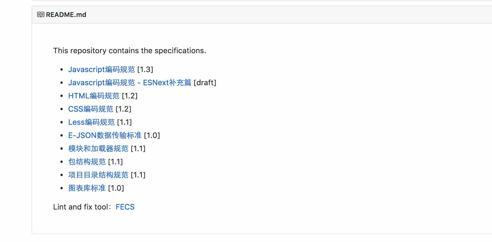

-
- Basic info. 基本信息
- 个人信息: 李由之 / 男 / 24岁
- 毕业院校: 太原理工大学 / 计算机与软件学院 / 软件工程专业
- 学 历: 本科
- 英语水平: CET-4
- 职 称: 软件设计师
- Blog: http://blog.csdn.net/m0_37529303
- GitHub: www.github.com/liyouzhi666
-
- Experience. 项目与工作经验
东软集团（大连）（2016.1 - 2017.3）
-
华为装备测试云
“华为装备测试云”的客户是华为（深圳）“2012实验室-装备与测试部”，软件的主要功能为装备测试自动化， 测试服务一键部署，后端集群化云管理，服务微服务化使用docker容器管理，前端使用angular2框架，使测试云较之前系统数据处理更快，数据管理更方便， 操作人员操作更简单，页面描画更流畅，由之前C-S模式变为B-S模式实现跨平台操作。

我参与“华为装备测试云”从项目立项到项目结束整个开发过程，在项目中作为项目组前端负责人，主要负责Web端开发和部署，并且与后端开发人员协调制定API，根据客户原始需求，分析需求并设计Web端页面架构， 带领团队成员完成项目前端的编码工作。我熟悉angular2的特性和搭建方式，熟练使用javascript和typescript编码，还能熟练编写dockerfile，将前端代码打包为docker容器推入kubernetes集群， 熟悉nginx的代理和反向代理的配置方式，在17年2月底到3月初出与团队主要成员去深圳参与项目交付，成功完成在华为厂区实地部署“装备测试云”的工作。 -
r_car
"r_car"基于ionic2框架开发的混合app，通过调用Cordava设备接口、使用typescript和html5、css3进行开发。这是一款针对针对汽车车友的app，兼顾汽车维护点定位、 车友定位、论坛评论分享交流经验的APP。
我在项目中负责前端开发，熟悉ionic2的体系结构和ionic特有的标签，熟练使用typescript，并在app中结合百度地图，实现定位功能，成功在androids手机上运行。
 -
iec61850改造
IEC61850标准是电力系统自动化领域唯一的全球通用标准。它通过标准的实现，实现了智能变电站的工程运作标准化。使得智能变电站的工程实施变得规范、统一和透明。 我们把现有c源码改造为以c++编写面向对象的形式，以类去区分各个模块，使得代码更加清晰，更加容易复用。
我在项目中负责iec61850通信模块调试，可以熟练使用c++进行编码和调试。
个人项目
-
liyouzhi666个人博客 链接
主要涉及angular2的入门、nginx基本配置、vscode工具介绍等，内容日常维护更新
 -
在线个人简历 源代码 Demo
设计优雅、内容完善的静态简历页面，可以部署于github和用浏览器直接生成合适尺寸的PDF
 -
Ng2-admin 源代码
ng2-admin是基于 Angular 2, Bootstrap 4 和 Webpack 的后台管理面板框架,我使用此框架主要用于学习angular2、webpack、electron
 -
指纹识别系统(串口) 源代码
一个使用QT开发C++编写的应用程序，基于串口助手源码开发指纹识别机的特有功能，实现了通过可视化界面操作硬件设备的功能
 -
智能玻璃 源代码
大学时期的小发明，基于8051单片机使用c语言编写控制程序，通过51单片机接受光敏传感器传回的光照强度控制步进电机转动角度带动传送带，传送带 带动偏振片旋转，从而达到不管光照强度如何在玻璃后的接收到的光强始终不变。
 -
Spec 源代码
HTML、CSS、Javascript的编码规范，在开发编码中以此规范为标准。

-
- Skill. 技能清单
Web前端
-
HTML / CSS
能够编写语义化的 HTML，模块化的 CSS，完成较复杂的布局
熟悉 angular2 的自定义事件、shadowDOM等与html页面有关的angular2特有的属性的处理方法
-
JavaScript
熟悉原生Javascript，能脱离jQuery等类库编码
能运用模块化、面向对象的方式编程
熟悉 jQuery Angular2 Typescript 的使用
-
其他
熟悉 systemJs，rollup 等前端自动化工具
了解 跨域请求、http协议、性能优化方面的一些知识
后端
-
熟悉 Linux 开发环境、 Linux 服务器环境搭建部署，三年 Linux 日常使用经验
了解 Apache Nginx web服务器
了解 Docker，能够编写dockerfile，熟悉docker的基本操作
了解 kubernetes的基础原理和基本操作
能够使用C++、nodejs 编写后端服务程序，了解golang的一些基础知识
其他
-
爱好丰富，日常维护CSDN博客和GitHub主页
自学能力强，于2014年11月通过软考获得“软件设计师”资格
工作积极认真，在东软集团2016年底获得绩效最高评级A
开发条理有序，熟练使用 Git SVN 等管理工具
善于总结归纳，熟练使用 Markdown 进行文档编写